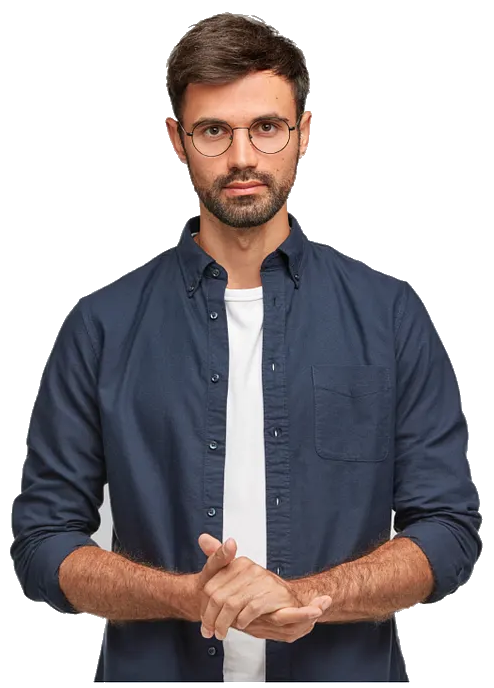

Founder and CEO of tri2max
- Android and iOS app for automated triathlon training planning
Scientist and Engineer by training.
Creator and Entrepreneur by conviction.
I combine scientific rigor with product execution to turn complex ideas into AI, software, and scalable businesses.

Mario is a person, that ... I enjoyed working with him. Or maybe not?Hans Peter, CEO, MyCompany
I worked with Mario and maybe he was coolPeter Schreiner, CTO, AnotherCompany
This is some text describing my passion for triathlon. My best races were ... I am particularly proud of ... I have been training for triathlon for ... years and have completed ...

This is some text describing my passion for canyoning.

This is some text describing my passion for mountaineering.